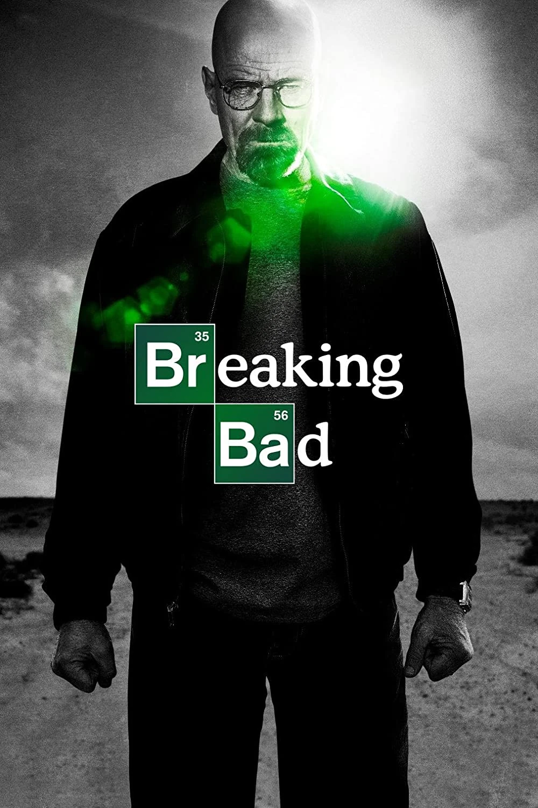

Breaking Bad

Sinopse
Walter White, um professor de química com câncer terminal, começa a fabricar metanfetaminas para garantir o futuro financeiro de sua família. Sua entrada no mundo do crime leva a uma série de consequências perigosas.
Personagens
- Walter White
- Jesse Pinkman
- Skyler White
- Hank Schrader
- Saul Goodman
Better Call Saul
Sinopse
A história de Jimmy McGill, um advogado ambicioso, mostrando sua transformação no advogado inescrupuloso Saul Goodman, que conhecemos em "Breaking Bad." A série explora suas escolhas e o universo do crime em que ele se envolve.
Personagens
- Jimmy McGill/Saul Goodman
- Mike Ehrmantraut
- Kim Wexler
- Howard Hamlin
- Chuck McGill
!
The office

Sinopse
Uma comédia em estilo mockumentary que segue o dia a dia dos funcionários da empresa de papel Dunder Mifflin, explorando suas relações e as situações cômicas do ambiente corporativo.
Personagens
- Michael Scott
- Jim Halpert
- Pam Beesly
- Dwight Schrader
- Andy Bernard